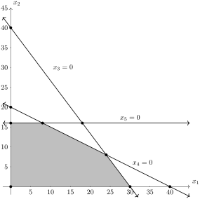

Another way to look at this problem is to introduce slack variables to the first three inequalities that will convert the inequality to an equation. If we introduce \(x_3, x_4\) and \(x_5\) in the following way:
and \(x_3, x_4\) and \(x_5\) must be nonnegative in order for the above inequalities to remain true. Solving these three equations for \(x_3, x_4\) and \(x_5\text{,}\) we can write the LOP as
This is called the dictionary form of the LOP. Note that the variables on the right of the equals signs are only \(x_1\) and \(x_2\text{.}\) These are called the nonbasic variables or parameters of the problem. These are the original variables. The four variables on the left side are \(z, x_3, x_4, x_5\text{.}\) The three \(x\) variables are called the basic variables and the set of these are called the basis of the problem. For this example, these are the objective and slack variables, however as we update the dictionary, these will change.
Note also, that when \(x_1, x_2, x_3, x_4\) and \(x_5\) are 0, these are the 5 lines that define the feasible set.
The basic variables and nonbasic are often distinguished from one another using the variables \(\beta\) and \(\pi\) respectively. For example, in the dictionary above, \(\beta=\{3,4,5\}\) and \(\pi=\{1,2\}\text{.}\)
A plot of the feasible set listed in the dictionary form in (3.1.1) is

Figure3.1.1.
In this form, it is easy to see that the boundaries of the feasible set occur when either the slack variables or the original variables are zero. Note that the original variables are zero on the coordinate axes. You can also notice that the vertices of the feasible set occur where two of the variables are zero. Note that there are 5 of these. Also, there are other intersection points between lines where the variables are 0, 4 of these are not within the feasible set.
Recall that from the previous chapter, that the optimal point occurs on one of the vertices of the feasible set. We will see here in this chapter how to walk from vertex to vertex not leaving the feasible set and also stopping when reaching the maximum of the objective.
Subsection3.1.2Basic Solutions
A solution to either the dictionary or the tableau is any set of values for \(\boldsymbol{x}\) that satisfy the problem constraints written as equalities. For example, \(\boldsymbol{x}=(10~ 5 ~|~ 65~20~11)^{\intercal}\) is a solution to the LOP above. This is because if we substitute these values of \(\boldsymbol{x}\) and \(z\text{,}\) then each line of the dictionary is satisfied.
For example, plugging these into the dictionary is
The value of \(z\) that corresponds to is solution is \(z=x_1+3x_2 = 10 + 3(5) = 25\text{.}\)
Note3.1.2.
The term solution is not a (or the) solution to the LOP, that is this may not be a value that is the optimum value of the function. We use the term solution here as a indication that a point satisfies all of the equations.
A solution is basic if the parameters or nonbasic variables are all zero. In the LOP problem above, the solution \(\boldsymbol{x}=(0~0~|~120~40~16)^{\intercal}\) is basic with value \(z=0\text{.}\) If we have a problem in dictionary form, we will set the basic variables to 0 and the parameters will be constants on right side of the equations.
In the example where \(x_1 =0\) and \(x_2=0\) is a basic solution with the basis \(\beta = \{1,2\}\text{.}\) Recall that we mention above that when two variables (in this case, not in general) are zero, then we are at a vertex of the feasible set. This vertex is at the origin.
A dictionary or tableau is feasible if its corresponding basic solution is feasible. Both \(\boldsymbol{x}=(10~ 5 ~|~ 65~20~11)^{\intercal}\) and \(\boldsymbol{x}=(0~0~|~120~40~16)^{\intercal}\) are feasible solutions, whereas \(\boldsymbol{x}=(0~30~|~30~-20~-14)^{\intercal}\) is not because \(x_4=-20\) and \(x_5=-14\) does not satisfy the nonnegative constraint.
We are now going to develop the Simplex Method to solve the LOP using the dictionary. This technique will be systematically going from vertex to vertex of the feasible set until the optimal solution is reached. 1
This is perhaps a bit too simplistic, because as we will see that the starting basis may not be in the feasible set and we need to get there first.
Lastly, the dictionary is optimal if its basic solution is optimal. The simplex method will stop when we reach an optimal solution.
Subsection3.1.3Developing the Simplex Method
If we return to the dictionary in (3.1.1), we notice that if either \(x_1\) or \(x_2\) increases in value then \(z\) increases and since we are seeking a maximum of \(z\text{,}\) this is desirable, so we want to increase either \(x_1\text{,}\)\(x_2\) or both. We must be careful however, because as \(x_1\) and \(x_2\) increases, \(x_3, x_4\) and \(x_5\) decrease and they must stay nonnegative. Before increasing these variables, recall that the basis is \(\beta=\{1,2\}\) indicating that these two variables are in the basis (recall that the basic variables are the ones on the right side of all of the equations in a dictionary). The variable \(x_1\) will be increased, so will set \(x_2=0\) in (3.1.1):
The largest value of \(x_1\) that ensure both of these stay true is \(x_1=30\text{.}\) If we let \(x_1=30\) in (3.1.1), notice that when \(x_2=0,\) the variable \(x_3\) becomes zero, therefore it appears that we have interchanged \(x_1\) and \(x_3\) between basic and nonbasic variables. Thus the new basis is \(\beta=\{1,4,5\}\) and the parameters is \(\pi = \{2,3\}\text{.}\) This switch of variables is called a pivot and is denoted \(1 \mapsto 3\text{,}\) where the first number 1 is the variable entering the basis and the second number is the one leaving.
If we want \(x_3\) to be in the basis and \(x_1\) to leave we use the 2nd equation in the dictionary in (3.1.1) and solve for \(x_1\) or
(Note: there was no reason to multiply the last row by 4, but you will see later why we want to do this.)
Also, we have a new basic solution for the dictionary in (3.1.2) as \(\boldsymbol{x}^{(1)}=(120~0~|~0~40~64)^{\intercal}/4=(30~0~|~0~10~16)^{\intercal}\text{.}\) where the superscript \((1)\) denotes the first step of the simplex method. Also, this dictionary corresponds to the basis of \(\beta=\{1,4,5\}\) and parameters \(\pi=\{2,3\}\text{.}\) The notation \(1 \mapsto 3\) shows that 1 has left the \(\pi\) set (nonbasic) to become a basic variable replacing 3.
The objective in the first row of (3.1.2) is \(z = 120/4=30\text{,}\) shows first that it has increased from the initial dictionary, but also that if we increase \(x_2\text{,}\) then \(z\) will increase. Because of this, we also know that the current solution is not optimal. We can increase \(x_2\) so long that it satisfies:
If we note that each of the first, second and fourth equations above are factors of 4 (the previous coefficient of all parameters), if we divide these three equations by 4 to get:
which is the current dictionary. Note that 4 is now a basic variable and 2 is now a parameter. This means that we have done the pivot: \(2\mapsto 4\) and the basis is \(\beta = \{3,4\}\) and parameter is \(\pi = \{1,2,5\}\text{.}\) The basic solution of this dictionary or tableau is \(\boldsymbol{x}=(120~40~|~0~0~40)^{\intercal}/5=(24~8~|~0~0~8)^{\intercal}\) with objective function value \(z=240/5=48\text{.}\)
If we look at the dictionary, the top row is \(5z=240+x_3-9x_4\text{.}\) If we increase the variable \(x_3\text{,}\) then the objective function will be increased. We will increase \(x_3\text{,}\) but in order to ensure that we remain in the feasible set, we required that
where the second inequality has been ignored because it is automatically satisfied for any positive value of \(x_3\text{.}\) Since the minimum value is associated with the 4th equation, we will solve for \(x_3\) in this equation or
The basic solution of this tableau is \(\boldsymbol{x}=(40~80~|~200~0~0)^{\intercal}/5\\ =(8~16~|~40~0~0)^{\intercal}\) with the objective function taking on the value \(z=56\text{.}\) Lastly, looking at the objective equation, increasing our basic variables \(x_4\) or \(x_5\) decreases the objective value, so this means that this solution is optimal.
In the next section, we repeat this example with a matrix form of the dictionary, called a tableau. This will make all of the calculation easier to do and with some software can simplify the steps tremendously.